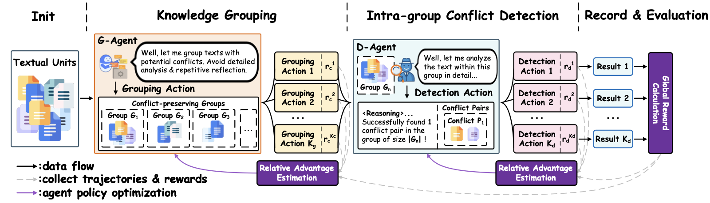
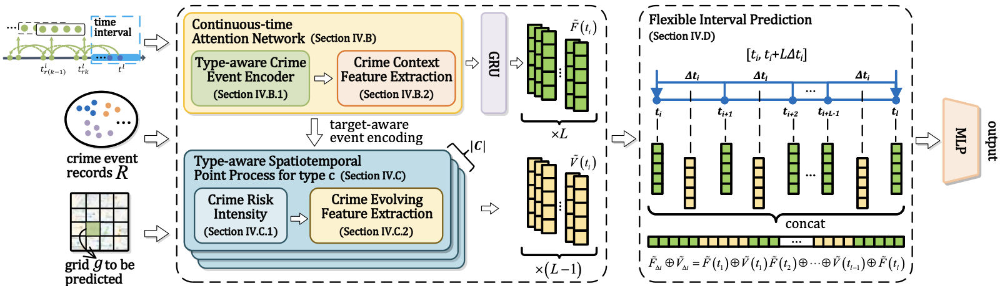
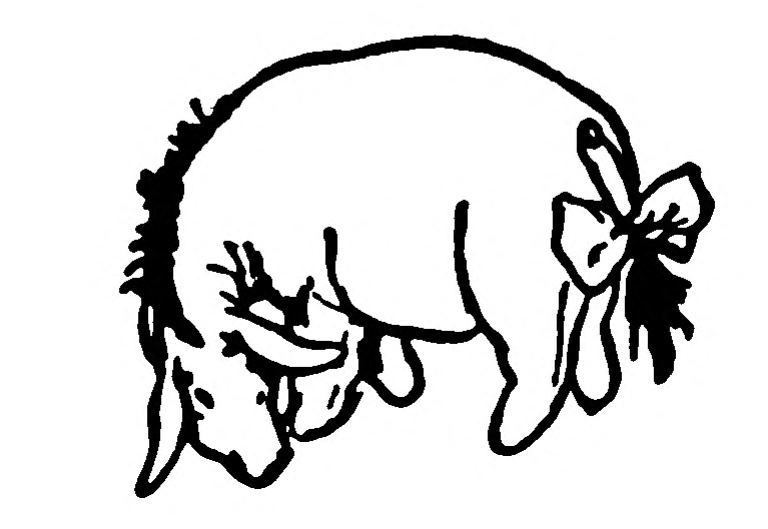
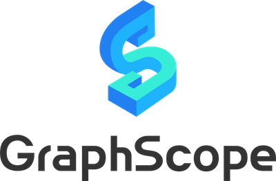

Southeast University
M.S. in Software Engineering · School of Computer Science and Engineering
Admitted by recommendation
2024.09 – 2027.07
Hi! I am Yi Hong (洪逸), a M.S. student in Software Engineering at the School of Computer Science and Engineering, Southeast University (东南大学). My research centers on Multi-Agent Reinforcement Learning and LLM-based Agents.
I am currently a backend development intern on the AI Platform (Agent Evaluation) team at ByteDance, where I build automated benchmark-production pipelines and LLM-driven trajectory-analysis tooling for evaluating coding agents. I am broadly interested in agent engineering, agentic RL, and retrieval-augmented systems.
M.S. in Software Engineering · School of Computer Science and Engineering
Admitted by recommendation
B.Eng. in Software Engineering · School of Software
Backend Development Intern
Algorithm Intern
Under review at NeurIPS 2026 (CCF-A)
A dual-agent task-decomposition architecture that exploits the sparsity of knowledge conflicts to reduce detection complexity from O(m²) to O(m + Nk²), with <15% extra token cost and <8s latency. Jointly trained knowledge-grouping and conflict-detection agents with GRPO, achieving SOTA accuracy–efficiency trade-off across multiple datasets.

IEEE Transactions on Knowledge and Data Engineering (TKDE), 2025 · CCF-A · student first author
FlexiCrime, an event-centric framework for predicting urban crime hotspots over arbitrary, user-specified time intervals — instead of fixed time granularities. It combines a continuous-time attention network that learns general crime-context patterns with a type-aware spatiotemporal point process that captures crime-evolving risk per type, time and location. Experiments on real-world data from two cities across twelve crime types show it outperforms baselines on flexible-interval prediction.



Languages: Python (primary); C++.
Workflow & Tools: Linux, VS Code, proficient with AI tools (Claude Code, etc.)